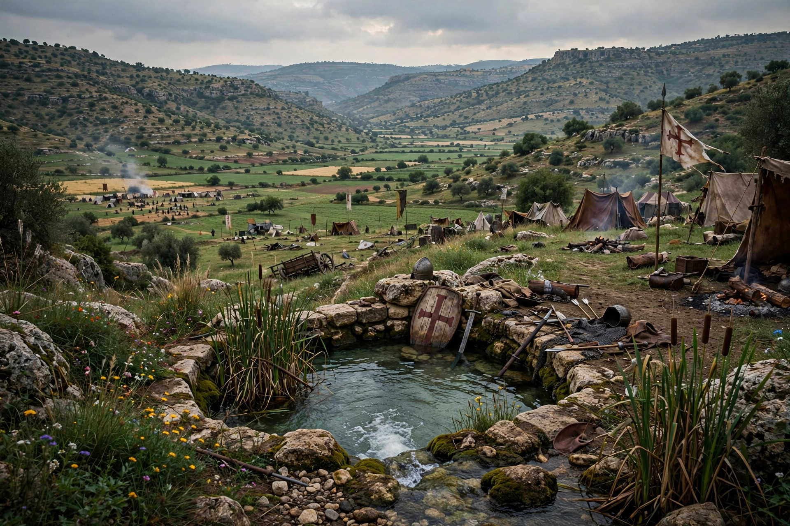

| Battle of Ain Jalut | |
|---|---|
| Date | 3 September 1260 |
| Location | Near Ayn Jalut (Spring of Harod), Jezreel Valley, Galilee |
| Result | Mamluk victory |
| Belligerents | Mamluk Sultanate vs. Mongol Empire (Ilkhanate forces) |
| Commanders | Qutuz and Baibars; Kitbuqa |
The Battle of Ain Jalut (Arabic: معركة عين جالوت, "Spring of Goliath") was fought between the Bahri Mamluks of Egypt and the Mongol Empire on 3 September 1260 near the Spring of Harod in the Jezreel Valley. The Mamluk victory is widely regarded as a turning point in world history: it marked the first time a Mongol advance had been permanently beaten back in direct combat on the western border of the Mongol realm, and it fixed the Euphrates as the enduring frontier between the Ilkhanate and the Islamic lands of Egypt and Syria.
After destroying Baghdad in 1258, Hülegü's Mongols subdued Syria in 1260, taking Aleppo and Damascus. When the Great Khan Möngke died, Hülegü withdrew with the bulk of his army to Azerbaijan, leaving his general Kitbuqa with a reduced force. The Mamluk sultan Qutuz, having secured an uneasy truce with the Crusader states at Acre, marched north to confront the Mongols. When the Mongol envoy demanding submission had been executed in Cairo, war was unavoidable.
The Mamluk army, which used Mongol-style tactics it knew well, concealed its main body in the hills around the spring while Baibars led a vanguard that engaged Kitbuqa and then feigned retreat — drawing the Mongols into the trap. When the full Mamluk force descended, Kitbuqa's army was encircled and destroyed; Kitbuqa himself was captured and executed after refusing to yield. Qutuz, according to tradition, rallied his men at the crisis of the battle with the cry "O Islam!"
Syria was quickly recovered for the Mamluks. On the march home Qutuz was assassinated and Baibars became sultan, founding a Mamluk ascendancy that would rule Egypt and Syria until 1517. The Mongols of the Ilkhanate tried repeatedly over the next decades to retake Syria, but never broke the Mamluk frontier for good.